作者：创世魂
● 概述
本组件主要用于为其它组件提供一个横向滚动能力，让其组件能横向展示更多内容。
● 位置(写)
帮助文档如下图：
通过本属性可以设置当前滚动条的滚动位置，默认最大位置为100。
同名的读属性可以读取当前滚动的位置。
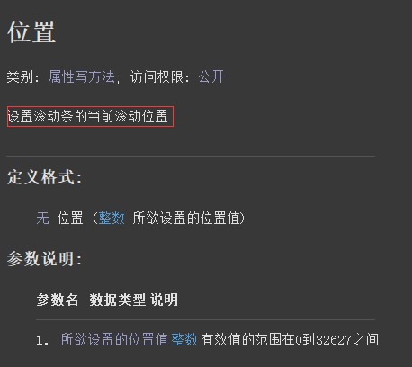
代码编写如下图：
1、按钮1点击后设置当前位置为50。
2、按钮2点击后读取当前位置。
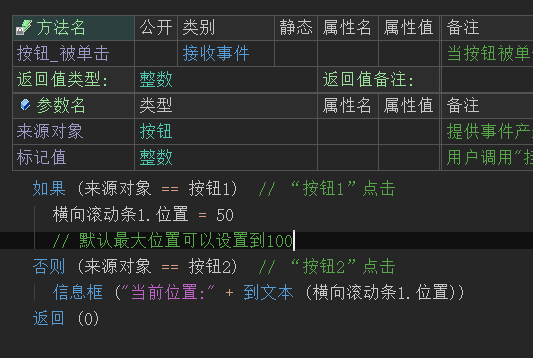
运行效果如下图：
最终可以看到横向滚动条的滚动位置可以成功被设置和读取。
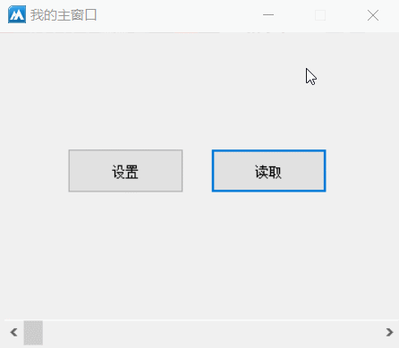
● 允许拖动跟踪(写)
“允许拖动跟踪”帮助文档如下图：
设置本属性值为真，可以触发“位置被改变”事件。
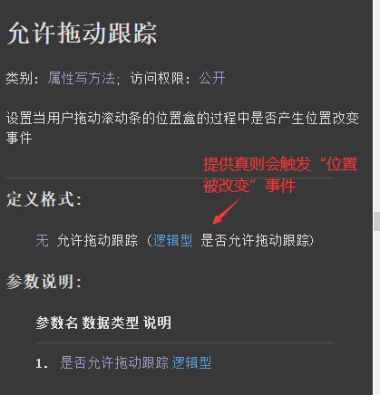
“位置被改变”帮助文档如下图：
当“允许拖动跟踪”属性设置为真后，滚动条位置被改变时会触发本事件。
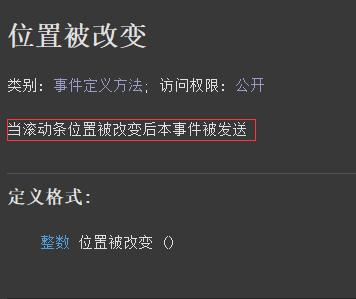
代码编写如下图：
1、首先在“横向滚动条”的属性栏设置“允许拖动跟踪”属性值为真。
2、添加“位置被改变”事件，取出当前位置显示在标签组件上。
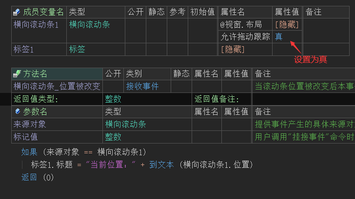
运行效果如下图：
最终可以看到当滚动条位置被改变的时候，会实时取出当前位置并显示在标签上。
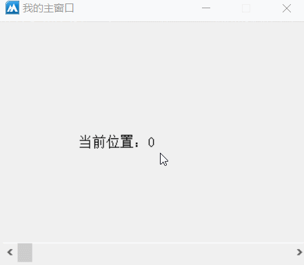
● 最大位置(写)
帮助文档如下图：
通过本属性可以设置当前组件的最大滚动位置，如果不设置默认最大为100。
注意：使用本属性不能超过32627且不能小于0。
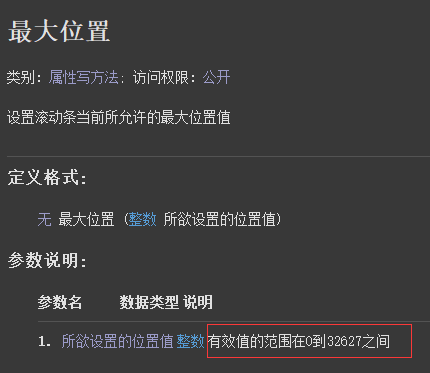
代码编写如下图：
1、在当前组件的属性栏调用本属性设置最大88。
2、添加“位置被改变”事件，取出实时滚动的位置。
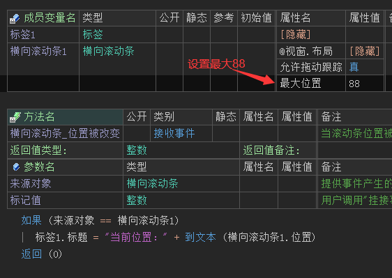
运行效果如下图：
最终可看到当滚动位置在最尾部时，当前位置显示为88,证明最大值设置成功。
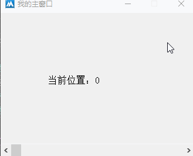
● 最小位置(写)
帮助文档如下图：
通过本属性可以设置当前滚动条的最小可滚动位置。
注意：使用本属性范围在0到32627之间。
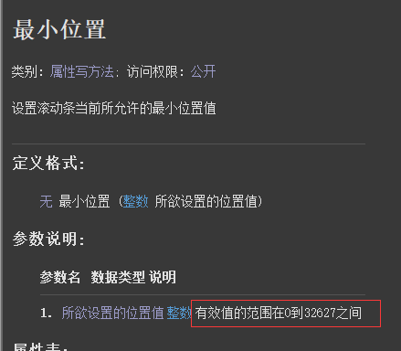
代码编写如下图：
1、直接在当前组件的属性栏调用本属性设置即可。
2、添加“位置被改变”事件取出实时位置。
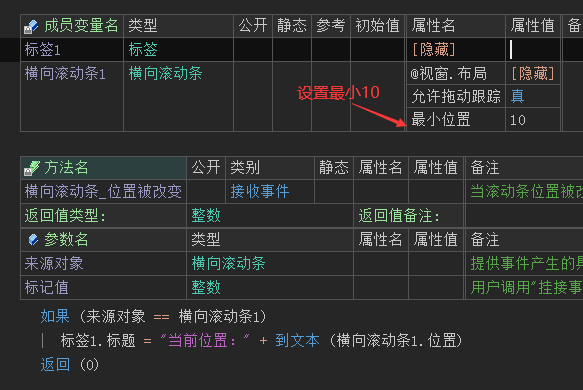
运行效果如下图：
最终可看到当滚动位置在最头部时，当前位置显示为10,证明最小值设置成功。
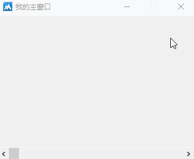
● 行改变值(写)
帮助文档如下图：
通过本属性可以设置当用户点击滚动条左右两边按钮时的步进值，不设置默认为1。
例如：设置本属性值为10后，点击滚动条左边按钮当前进度会-10，点击右边按钮当前进度会+10。
注意：本属性不能为0，并且不能超过32627。
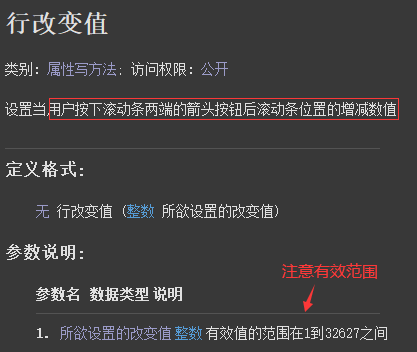
代码编写如下图：
按钮点击后设置本属性值为20。
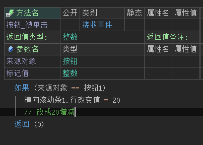
运行效果如下图：
最终可看到按钮点击后，再去点击滚动条按钮时滚动条的步进值发生变化。
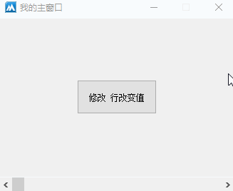
● 页改变值(写)
帮助文档如下图：
通过本属性可修改点击滚动条空白区域时的步进值，不设置默认为10。
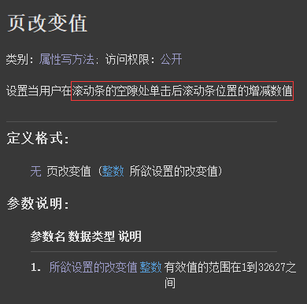
代码编写如下图：
按钮点击后设置步进值为1。
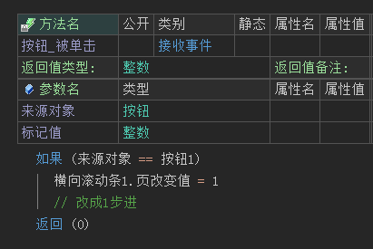
运行效果如下图：
最终可看到按钮点击后，再去点击滚动条空白区域时步进值会发生变化。
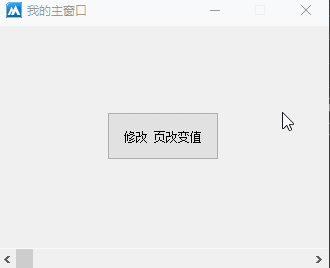
● 置滚动范围
帮助文档如下图：
通过本方法可以同时设置最小滚动位置和最大滚动位置。
注意：最小不能小于0，最大不能超过32627。
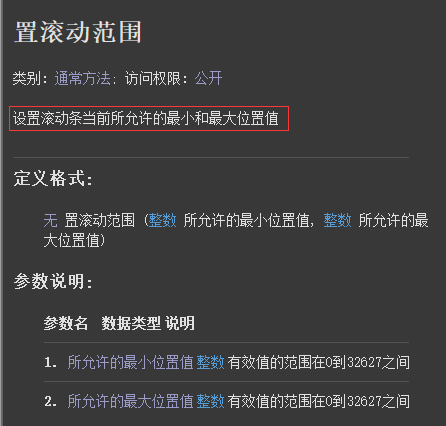
代码编写如下图：
1、首先设置“允许拖动跟踪”属性为真。
2、然后添加“位置被改变”事件实时取出当前滚动位置。
3、最后添加窗口“创建完毕”事件，调用当前方法设置滚动范围。
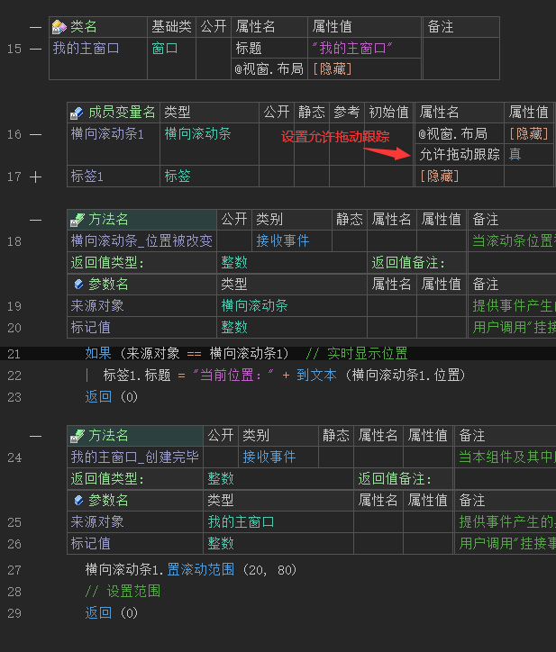
运行效果如下图：
最终可看到滚动范围和设置的范围一致。
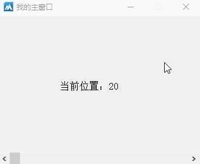
● 小案例
利用其滚动特性实现一个横向滚动其它组件的效果。
代码编写如下图：
1、设置“允许拖动跟踪”属性值为真。
2、添加滚动条的“位置被改变”事件，设置“标签1”组件的左边为负的当前位置值。
3、添加主窗口“创建完毕”事件，设置滚动范围为标签组件的隐藏区域的尺寸。
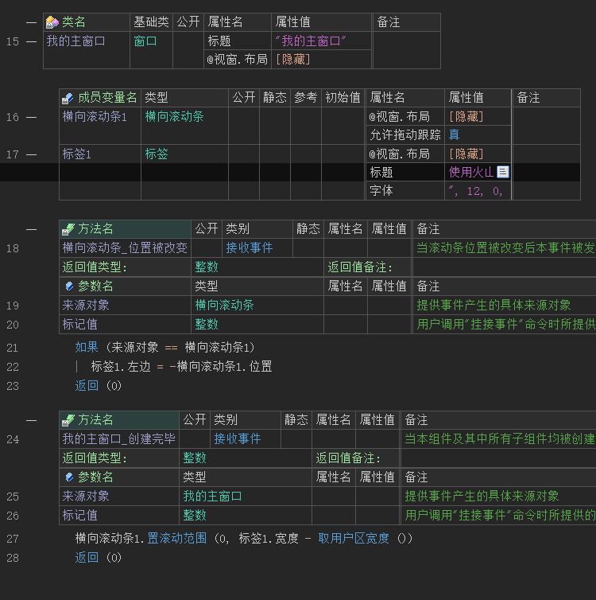
运行效果如下图：
最终当操作滚动条的时候，标签组件也会跟随滚动。
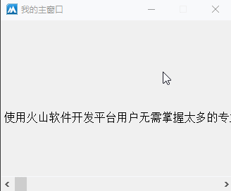